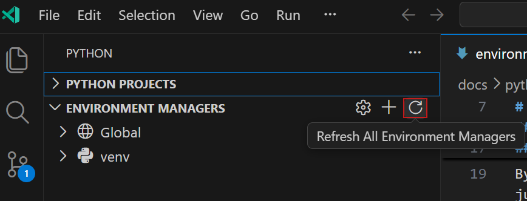
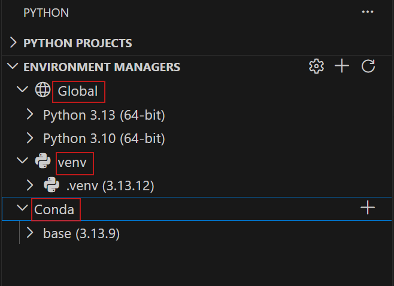
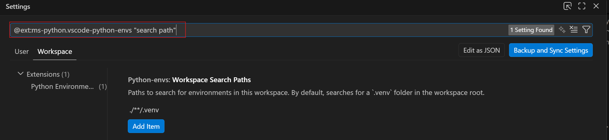
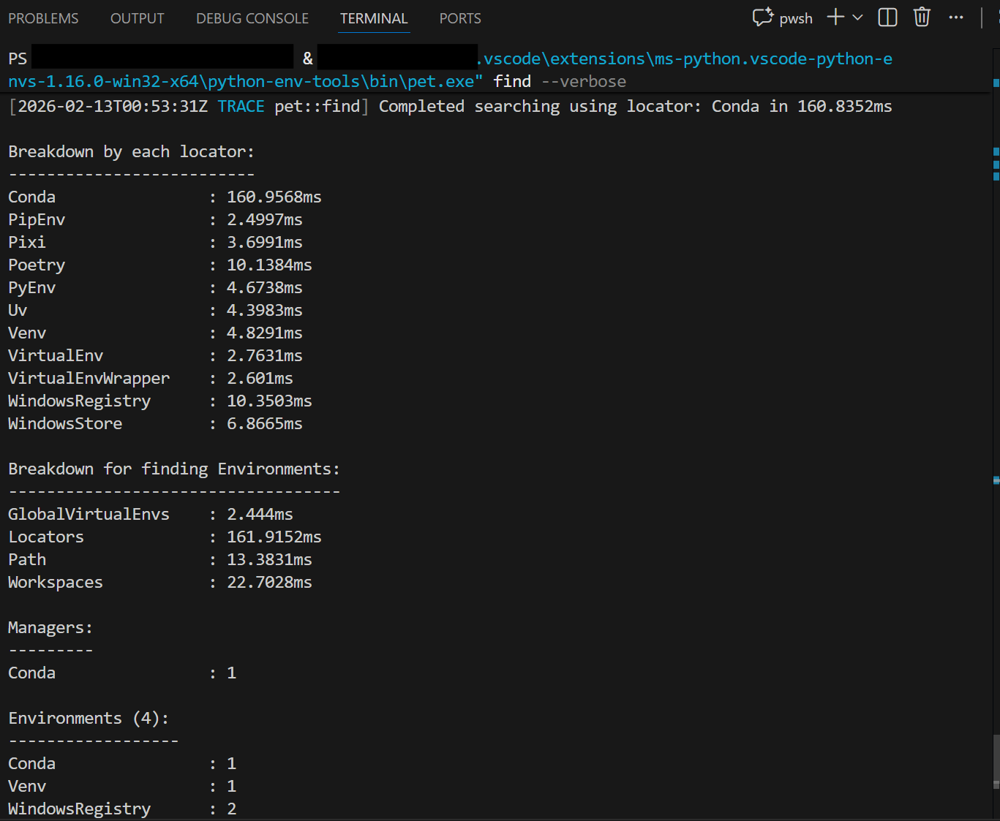
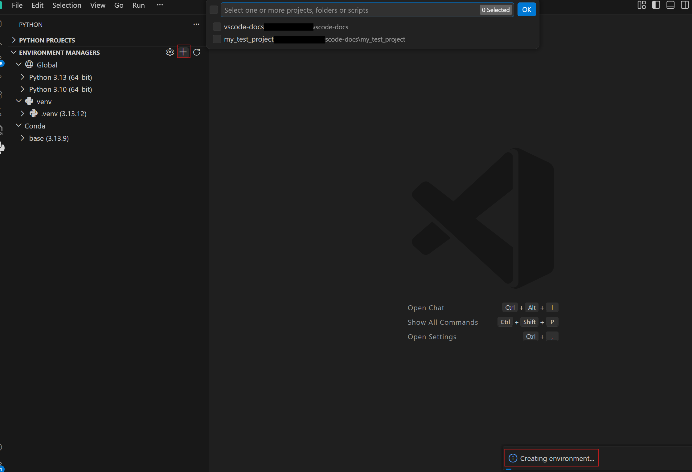
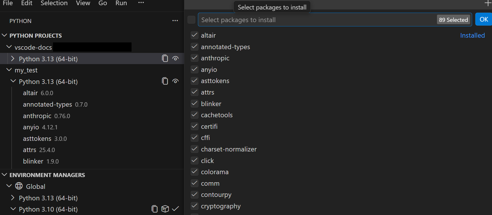
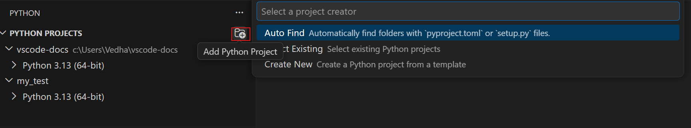
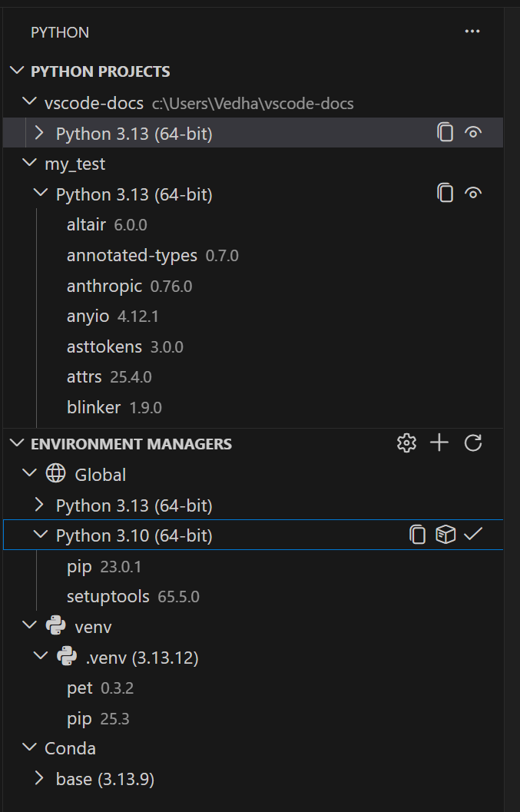
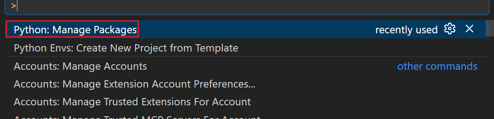
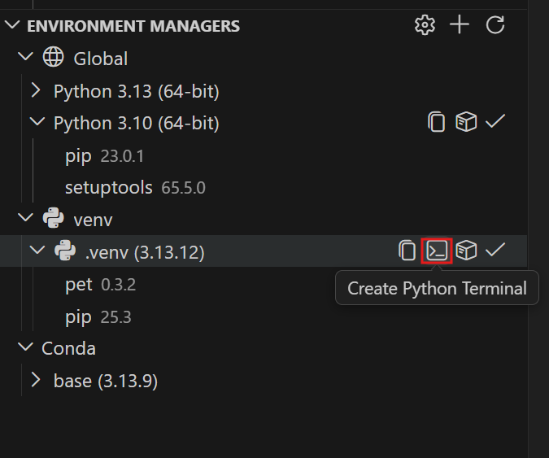

VS Code 中的 Python 环境
Python Environments 扩展将环境和包管理功能引入 Visual Studio Code 的用户界面。该扩展提供了一个统一的界面，用于创建环境、安装包和切换解释器，无论你是使用 venv、uv、conda、pyenv、poetry 还是 pipenv。
核心功能：
- 创建、删除和切换环境
- 安装和管理包
- 在终端中激活 Python
- 将环境分配给特定文件或文件夹（称为"Python 项目"）
该扩展与 Python 扩展 协同工作，无需任何设置即可开始使用。
快速入门
大多数用户不需要进行任何配置。 该扩展会自动发现你的 Python 环境，并在运行代码时使用它们。
如果你拥有基本设置，例如为整个工作区使用一个环境：
- 打开一个 Python 文件
- 查看状态栏以了解哪个环境处于活动状态
- 要切换环境，请选择状态栏中的环境控件
需要创建环境？ 打开 Python 侧栏，展开环境管理器，然后选择 + 按钮。该扩展将引导你完成各个步骤。
用户界面组件
环境发现
以下环境管理器会被自动发现：
| 管理器 | 搜索位置 | ||
|---|---|---|---|
| ------------- | ------------------------------------------------------------------------------------ | ||
| venv | 工作区文件夹（可通过 workspaceSearchPaths 配置） | ||
| 系统 Python | PATH、/usr/bin、/usr/local/bin、Windows 注册表、python.org 安装 | ||
| Conda | 运行 conda info --envs 查找已配置的环境目录 | ||
| Pyenv | $PYENV_ROOT/versions 或 ~/.pyenv/versions | ||
| Poetry | 项目 .venv 文件夹和 ~/.cache/pypoetry/virtualenvs | ||
| Pipenv | ~/.local/share/virtualenvs（Linux/macOS）或 %USERPROFILE%\.virtualenvs（Windows） |
发现过程在扩展激活时自动运行。该扩展使用 Python Environment Tool (PET) Rust 二进制文件扫描系统以查找 Python 环境。PET 通过检查你的 PATH（例如，查找 conda、pyenv 和 poetry 可执行文件）和已知安装位置来查找环境管理器，然后搜索由每个环境管理器管理的环境。
要手动触发刷新：
- 打开命令面板（
Cmd+Shift+P或Ctrl+Shift+P） - 运行Python Environments: Refresh All Environment Managers
你也可以点击环境管理器视图标题中的刷新图标。

_选择刷新图标以重新扫描环境。_
查看已发现的环境
已发现的环境出现在两个位置：
- 环境管理器视图：在 Python 侧栏中，环境按管理器类型分组（例如，venv、Conda 等）
- 环境选择：为项目选择解释器时，所有已发现的环境会显示在一个统一列表中

_环境管理器视图按类型分组环境。_
[!TIP]
还没有环境？请参阅 Python 项目 部分，了解如何使用该扩展创建环境。
配置搜索路径
默认情况下，该扩展使用 glob 模式 ./**/.venv 搜索整个工作区中的虚拟环境。这将查找工作区中任何名为 .venv 的文件夹。
要在自定义位置发现环境，请更新 python-envs.workspaceSearchPaths 设置：
[!NOTE]
此设置必须配置在工作区或文件夹级别，而不是用户级别。
{
"python-envs.workspaceSearchPaths": [
"./**/.venv",
"./envs/**",
"./my-custom-env"
]
}提示：
- 使用
进行递归搜索（例如，.//env会查找任何深度下名为env的文件夹） - 相对路径从工作区文件夹根目录解析
要快速打开搜索路径设置：
- 打开命令面板
- 运行Python Environments: Configure Search Settings

_添加自定义 glob 模式以搜索其他位置。_
全局搜索路径：对于工作区之外的环境（如共享的 ~/envs 文件夹），请使用 python-envs.globalSearchPaths：
{
"python-envs.globalSearchPaths": [
"/Users/yourname/envs",
"/opt/shared-envs"
]
}此设置要求使用绝对路径，并在用户（全局）级别配置。
旧版设置：如果你之前使用过 python.venvPath 或 python.venvFolders，这些设置会自动与新的搜索路径合并。建议迁移到 python-envs.globalSearchPaths 以确保未来的兼容性。
选择环境
要使用已发现的环境：
- 状态栏：选择窗口底部显示的 Python 版本
- 命令面板：运行Python: Select Interpreter，然后从列表中选择
选定的环境用于运行代码、调试以及 IntelliSense 等语言功能。
[!TIP]
默认情况下，调试器使用你选择的环境。要使用不同的解释器进行调试，请在launch.json调试配置中设置python属性。

_选择状态栏中的 Python 版本以切换环境。_
扩展如何自动选择：当你在未明确选择环境的情况下打开工作区时，扩展会按以下顺序自动选择一个环境：
- 工作区本地虚拟环境（
.venv、venv） - 全局/系统解释器
要覆盖此优先级顺序，请设置 python-envs.defaultEnvManager 以优先使用特定管理器（例如，ms-python.python:conda），或者配置 Python 项目 以实现每个文件夹的控制。旧版设置也仍然受支持。
环境发现故障排除
| 症状 | 原因 | 解决方法 | ||
|---|---|---|---|---|
| ------------------------------------ | ------------------------------------------------- | ----------------------------------------------------------------------- | ||
| 环境未列出 | 位置不在搜索路径中 | 将路径添加到 workspaceSearchPaths 或 globalSearchPaths | ||
| 环境显示为 "(broken)" | 缺少 pyvenv.cfg 或 Python 可执行文件无效 | 重新创建环境或修复损坏的文件 | ||
| 最近创建的环境缺失 | 发现缓存过时 | 运行Refresh All Environment Managers | ||
| 找不到 Conda 环境 | 未检测到 Conda | 确保 conda 在你的 PATH 中，或安装 Conda | ||
| 设置未生效 | 设置作用域错误 | 确保 workspaceSearchPaths 在工作区级别设置，而非用户级别 |
对于高级故障排除，可以直接运行 Python Environment Tool (PET) 查看原始发现输出：
- 打开命令面板
- 运行Python Environments: Run Python Environment Tool (PET) in Terminal...
- 选择一个选项：
- Find All Environments：运行
pet find --verbose，列出所有已发现的环境及详细输出 - Resolve Environment...：输入 Python 可执行文件的路径，以调试为何特定环境未被检测到
- Find All Environments：运行

_PET 详细输出显示到底发现了哪些环境及其原因。_
高级故障排除适用于以下场景：
- 你需要验证某个环境是否被检测到
- 你想了解某个环境为何出现在特定管理器下
- 你正在调试路径解析问题
创建、删除和管理环境
创建环境
该扩展提供两种创建环境的方式：快速创建以追求速度，自定义创建以追求控制。
快速创建
选择环境管理器视图中的 + 按钮。扩展会执行以下步骤：
- 使用你的默认管理器（默认为 venv，可通过
python-envs.defaultEnvManager配置） - 选择可用的最新 Python 版本
- 将环境命名为
.venv（如果已存在，则为.venv-1、.venv-2） - 如果找到
requirements.txt或pyproject.toml，则从中安装依赖项 - 为你的工作区选择新环境
这是获取可用环境的最快方式。

_快速创建使用合理的默认值构建环境。_
自定义创建
如需更多控制，请从命令面板运行Python: Create Environment并按提示操作：
- 选择管理器：venv 或 conda
- 选择 Python 版本：从已发现的解释器（venv）或可用 Python 版本（conda）中选择
- 命名你的环境：输入自定义名称或接受默认名称
- 安装依赖项：选择从
requirements.txt、pyproject.toml或environment.yml安装

_自定义创建允许你配置每个步骤。_
使用 uv 加快创建速度
如果已安装 uv，扩展会自动将其用于 venv 创建和包安装，这比标准工具快得多。可以通过以下方式配置：
{
"python-envs.alwaysUseUv": true
}当 alwaysUseUv 启用时（默认设置），uv 管理所有虚拟环境。将其设置为 false 则仅对 uv 显式创建的环境使用 uv。
支持的管理器
| 管理器 | 快速创建 | 自定义创建 | ||
|---|---|---|---|---|
| --------- | -------------- | --------------- | ||
| venv | ✅ | ✅ | ||
| conda | ✅ | ✅ | ||
| pyenv | — | — | ||
| poetry | — | — | ||
| pipenv | — | — |
[!NOTE]
只有 venv 和 conda 支持从 VS Code 创建环境。其他管理器（pyenv、poetry、pipenv）可以发现现有环境，但不能通过扩展创建新环境。使用它们各自的 CLI 工具创建环境，然后扩展会自动发现它们。
删除环境
要删除环境：
- 在环境管理器视图中，找到该环境
- 右键点击并选择Delete
删除环境会从磁盘中删除环境文件夹。任何使用此环境的项目都需要你选择一个新的环境。
Python 项目
Python 项目是你想要与特定环境关联的任何文件或文件夹。默认情况下，你的整个工作区使用一个环境。项目允许你将不同的环境分配给不同的文件夹。这对于单体仓库、微服务或跨 Python 版本测试至关重要。
为什么使用项目？
| 场景 | 没有项目时 | 有项目时 | ||
|---|---|---|---|---|
| ---------- | ------------------ | --------------- | ||
| 包含后端和 ML 服务的单体仓库 | 两者共享一个解释器 | 各自拥有自己的环境 | ||
| 测试 Python 3.10 与 3.12 | 手动切换解释器 | 将不同版本分配给不同文件夹 | ||
| 与团队成员共享工作区 | 每个人手动配置 | 通过 .vscode/settings.json 同步设置 |
如果你整个工作区只有一个环境，则无需显式设置项目。选择一个解释器即可完成。
Workspace
├── Python Project: backend/
│ └── Environment: .venv (Python 3.12)
│ └── Manager: venv
│
├── Python Project: frontend-utils/
│ └── Environment: .venv (Python 3.10)
│ └── Manager: venv
│
└── Python Project: ml-pipeline/
└── Environment: ml-env (Python 3.11)
└── Manager: conda什么会使用项目分配？
- 运行和调试：使用项目的环境
- 终端：使用项目的环境激活
- 测试资源管理器：每个项目拥有自己的测试树和自己的解释器（请参阅 多项目测试）
[!NOTE]
Pylance 和 Jupyter 目前每个工作区使用单个解释器，而非每个项目的环境。请参阅 已知限制。
添加项目
要将文件夹或文件视为单独的项目：
- 在资源管理器中右键点击它
- 选择Add as Python Project
或者，在Python 项目视图中选择 +，然后选择以下任一选项：
- Add Existing：手动选择文件/文件夹
- Auto Find：发现包含
pyproject.toml或setup.py的文件夹[!TIP]
当你添加项目时，其文件夹会自动添加到环境搜索路径中。项目文件夹内的环境（例如
my-project/.venv）会被自动发现，无需更新workspaceSearchPaths。

_添加现有文件夹或自动发现项目。_
分配环境
一旦文件夹成为项目，即可分配其环境：
- 在Python 项目视图中，点击项目下方显示的环境（或"No environment"）
- 从已发现的环境中选择
选定的环境会在你运行或调试该项目中的文件时使用。

_点击环境以更改它。_
设置如何存储
当你将环境分配给项目时，扩展会写入你的工作区设置（.vscode/settings.json）：
{
"python-envs.pythonProjects": [
{
"path": "backend",
"envManager": "ms-python.python:venv"
},
{
"path": "ml-service",
"envManager": "ms-python.python:conda"
}
]
}请注意，设置存储的是环境管理器，而非硬编码的解释器路径。扩展会单独记住你选择了哪个具体环境，并在运行时解析它。这种设计使设置可共享：
- 无特定于机器的路径：团队成员不需要
/Users/yourname/.venv - 跨系统可移植：适用于 macOS、Windows 和 Linux
- 经得起环境重建：如果你删除并重新创建
.venv，它仍然有效
与团队成员共享：
- 将
.vscode/settings.json提交到你的仓库 - 团队成员克隆并打开工作区
- 他们创建自己的环境（快速创建在此处非常适用）
- 扩展自动使用每个项目配置的管理器
[!NOTE]
环境文件夹（如
.venv）仍需要在每台机器上创建。只有配置是共享的，而不是环境本身。移除项目
在Python 项目视图中右键点击一个项目，然后选择Remove Python Project。这将移除映射关系。它不会删除任何文件。
从模板创建项目
要使用正确的结构搭建新项目，请从命令面板运行Python Envs: Create New Project from Template。可选择：
- Package：创建一个包含
pyproject.toml、包目录和测试的文件夹 - Script：创建一个包含内联依赖元数据（PEP 723）的单个
.py文件
有关模板结构的详细信息，请参阅完整的 Python 项目指南。
了解更多
有关模板、多根工作区、常见场景和故障排除的详细指导，请参阅完整的 Python 项目指南。
包管理
无需打开终端，即可直接从 VS Code 安装和卸载 Python 包。
安装包
- 在环境管理器视图中，找到一个环境
- 右键点击并选择Manage Packages
- 搜索包并选择你要安装的包
或者从命令面板运行Python Envs: Manage Packages。

_直接从 VS Code 搜索和安装包。_
从 requirements 文件安装：你也可以从 requirements.txt、pyproject.toml 或 environment.yml 安装包。根据提示选择文件，扩展会安装所有列出的依赖项。
卸载包
- 在环境管理器视图中展开一个环境以查看已安装的包
- 右键点击一个包并选择Uninstall Package
按环境分类的包管理器
该扩展会根据你的环境自动使用适当的包管理器：
| 环境 | 包管理器 | ||
|---|---|---|---|
| ------------- | ----------------- | ||
| venv | pip | ||
| conda | conda | ||
| pyenv | pip | ||
| poetry | pip | ||
| pipenv | pip | ||
| system | pip |
要覆盖默认设置，请设置 python-envs.defaultPackageManager。
使用 uv 加快安装速度
如果已安装 uv 且 python-envs.alwaysUseUv 已启用（默认设置），venv 环境中的包安装将使用 uv pip 而不是普通的 pip，这对于大型依赖树来说速度显著更快。
设置与配置
本节涵盖所有扩展设置、解释器选择的工作原理以及旧版设置迁移。
解释器选择优先级
当你打开工作区时，扩展按以下顺序检查这些来源来确定使用哪个环境：
| 优先级 | 来源 | 适用情况 | ||
|---|---|---|---|---|
| ---------- | -------- | ----------------- | ||
| 1 | pythonProjects[] | 如果你为此路径配置了项目 | ||
| 2 | defaultEnvManager | 仅当你明确设置了此项（非默认值）时 | ||
| 3 | python.defaultInterpreterPath | 旧版设置，如果已配置 | ||
| 4 | 自动发现 | 查找工作区本地的 .venv，然后是全局解释器 |
核心原则：用户配置的设置始终优先于默认设置。如果你没有明确设置 defaultEnvManager（它使用内置默认值），扩展会跳过它并检查下一个优先级。
缓存：扩展会缓存解析的环境以提高性能，但你的明确设置始终优先于缓存值。你永远不需要担心过期的缓存在覆盖你的选择。
有关解释器选择行为的更多详细信息，请参阅 解释器选择快速参考。
设置何时写入
扩展仅在你进行明确更改时才写入设置：
| 操作 | 是否写入设置？ | ||
|---|---|---|---|
| ------------------------ | --------------------- | ||
| 打开工作区（首次） | ❌ 否 | ||
| 扩展自动选择环境 | ❌ 否 | ||
| 你手动选择环境 | ✅ 是，更新 pythonProjects | ||
| 你创建一个新环境 | ✅ 是，可能更新 pythonProjects | ||
| 你在 UI 中更改设置 | ✅ 是 |
这确保了打开工作区不会将自动生成的条目添加到你的 settings.json 中。
Python 环境设置
| 设置 | 默认值 | 描述 | ||
|---|---|---|---|---|
| --------- | --------- | ------------- | ||
python-envs.defaultEnvManager | ms-python.python:venv | 用于创建环境的默认环境管理器。选项：ms-python.python:venv、ms-python.python:conda | ||
python-envs.defaultPackageManager | ms-python.python:pip | 默认包管理器。通常由环境管理器决定。 | ||
python-envs.pythonProjects | [] | 项目配置数组。通过 UI 管理，很少手动编辑。 | ||
python-envs.workspaceSearchPaths | ["./**/.venv"] | 用于在工作区中搜索环境的 glob 模式。必须在工作区级别设置。 | ||
python-envs.globalSearchPaths | [] | 用于全局搜索环境的绝对路径（例如，~/envs）。 | ||
python-envs.alwaysUseUv | true | 当可用时，使用 uv 进行 venv 创建和包安装。 |
终端设置
当你在 VS Code 中打开终端时，扩展会自动激活你选择的 Python 环境，以便 python、pip 和相关命令使用正确的解释器。
| 设置 | 默认值 | 描述 | ||
|---|---|---|---|---|
| --------- | --------- | ------------- | ||
python-envs.terminal.autoActivationType | command | 确定环境中终端激活的方式。见下文。 | ||
python-envs.terminal.showActivateButton | false | （实验性）在终端中显示激活/停用按钮。 | ||
python.terminal.useEnvFile | false | 当为 true 时，将 .env 文件中的变量注入终端。 | ||
python.envFile | ${workspaceFolder}/.env | 当 useEnvFile 启用时使用的 .env 文件路径。 |
终端激活类型：
| 值 | 行为 | 最适合的场景 | ||
|---|---|---|---|---|
| ------- | ---------- | ---------- | ||
shellStartup | 通过 shell 启动脚本激活。终端打开时环境立即处于活动状态 | Copilot 终端命令，更清爽的体验 | ||
command | 终端打开后在终端中可见地运行激活命令 | 与所有 shell 兼容 | ||
off | 无自动激活 | 手动控制 |
[!TIP]
如果你使用 Copilot 运行终端命令，请使用 shellStartup。它确保环境在第一个命令执行之前就处于活动状态。这将在未来版本中成为默认设置。
[!NOTE]
更改autoActivationType后，请重启你的终端以使更改生效。要撤销shellStartup的更改，请运行Python Envs: Revert Shell Startup Script Changes。
为特定环境打开终端：
你可以打开一个已激活任何环境的新终端：
- 在环境管理器视图中，找到该环境
- 右键点击并选择Open in Terminal

_打开一个已激活任何环境的终端。_
有关详细的故障排除以及激活在底层的工作原理，请参阅 终端自动激活详解。
.env 文件支持
要将环境变量从 .env 文件注入到你的终端：
- 在工作区根目录创建一个
.env文件，或使用python.envFile指定自定义路径 - 将
python.terminal.useEnvFile设置为true# .env API_KEY=your-secret-key DATABASE_URL=postgres://localhost/mydb
变量在终端创建时注入。这对于不应提交到源代码管理的开发凭据非常有用。
旧版设置
Python 扩展中的以下设置仍然受支持，但有更新的等效项：
| 旧版设置 | 新等效项 | 备注 | ||
|---|---|---|---|---|
| ---------------- | ---------------- | ------- | ||
python.venvPath | python-envs.globalSearchPaths | 自动合并。建议迁移。 | ||
python.venvFolders | python-envs.globalSearchPaths | 自动合并。建议迁移。 | ||
python.terminal.activateEnvironment | python-envs.terminal.autoActivationType | 设置为 off 以禁用。新设置优先。 | ||
python.defaultInterpreterPath | — | 仍然受支持。在优先级链中用作回退。 | ||
python.condaPath | — | 仍然受支持。指定自定义 conda 可执行文件位置。 |
设置作用域参考
设置的行为根据其配置位置而有所不同：
| 设置 | 用户 | 工作区 | 文件夹 | ||
|---|---|---|---|---|---|
| --------- | ------ | ----------- | -------- | ||
defaultEnvManager | ✅ | ✅ | ❌ | ||
defaultPackageManager | ✅ | ✅ | ❌ | ||
pythonProjects | ❌ | ✅ | ✅ | ||
workspaceSearchPaths | ❌ | ✅ | ✅ | ||
globalSearchPaths | ✅ | ❌ | ❌ | ||
alwaysUseUv | ✅ | ❌ | ❌ | ||
terminal.autoActivationType | ✅ | ❌ | ❌ |
关键要点：workspaceSearchPaths 必须在工作区或文件夹级别设置（不能是用户级别），因为它是相对于工作区文件夹的。
可扩展性
Python Environments 扩展设计为可扩展的。任何环境或包管理器都可以构建一个插入到 Python 侧栏的扩展，与内置管理器一起出现。这意味着生态系统可以支持新工具而无需等待此扩展的更新。
社区成员正在为其他环境管理器构建扩展，例如 Pixi Extension。
已知限制
Pylance 与多项目工作区
Pylance 不支持在同一工作区中使用不同解释器的多个 Python 项目。即使你使用 Python 项目 为不同文件夹配置了单独的环境，Pylance 也会为整个工作区使用单个解释器——通常是工作区根目录关联的解释器。要为不同文件夹使用不同的解释器，请将它们作为工作区文件夹添加到多根工作区中（文件 > 将文件夹添加到工作区），因为 Pylance 在每个工作区文件夹中独立运行。
Jupyter 笔记本
Jupyter 笔记本不使用 Python Environments API 进行环境发现。相反，它们依赖较旧的 Python 扩展 API。这意味着笔记本内核选择可能会显示与环境管理器视图不同的一组环境。